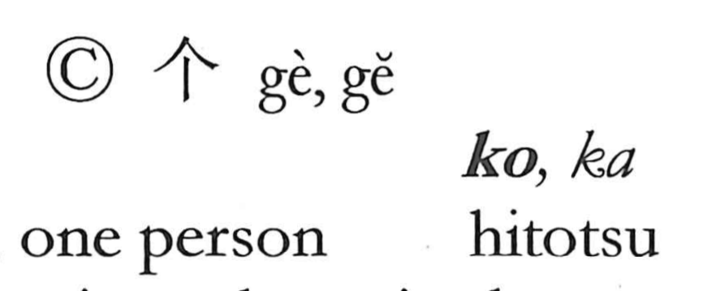

個

Kun: | On: ko
individual ・ single unit ・ counter for pieces
Explanation
個 combines 人, a person, with 固 as its phonetic. 固 concerns something fixed in a definite form. 個 identifies one such entity considered on its own, without a matching counterpart: one item or one person.
The single entity becomes a unit for counting. 個 therefore follows numerals in expressions such as 一個 and 二個, sharing this function with 个 and 箇. It also supplies the individual considered separately from a larger group.
The word later enters colloquial constructions such as 真個, really, and 這個, this. These extend its grammatical range while preserving the act of singling something out. The definite form and the distinct unit remain connected through 固 and 個.